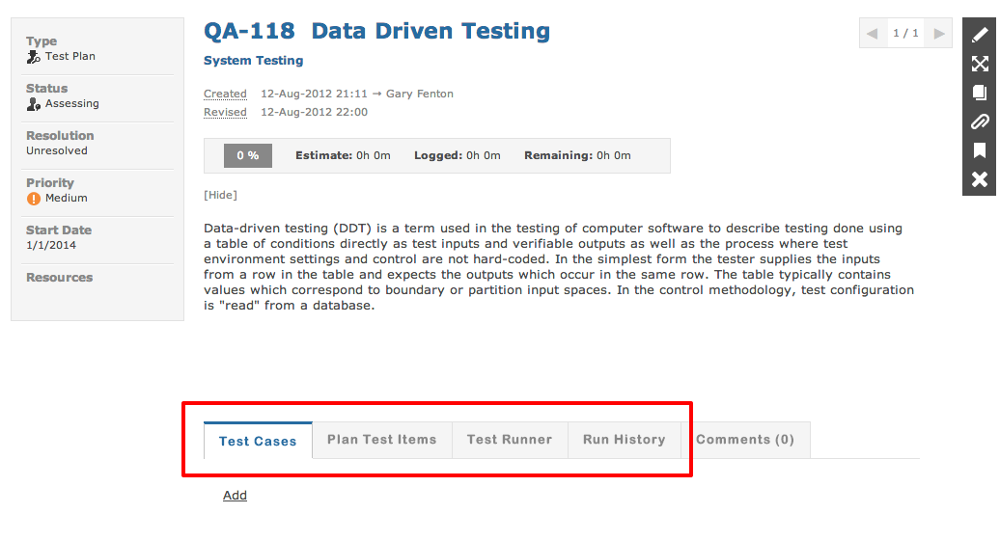
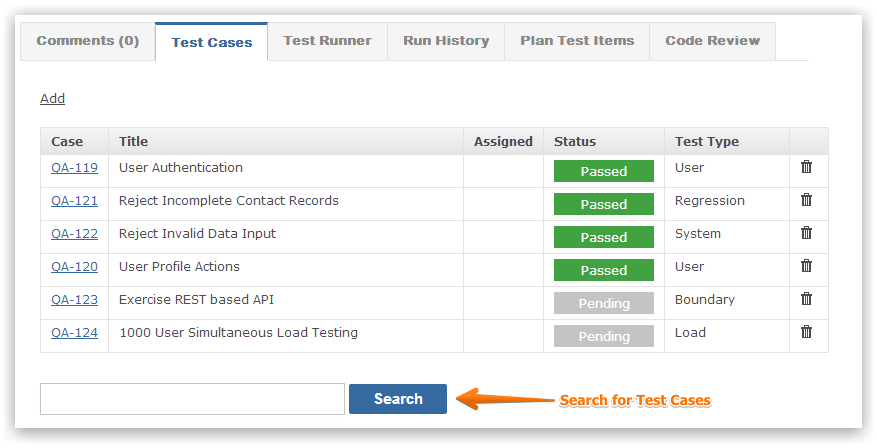
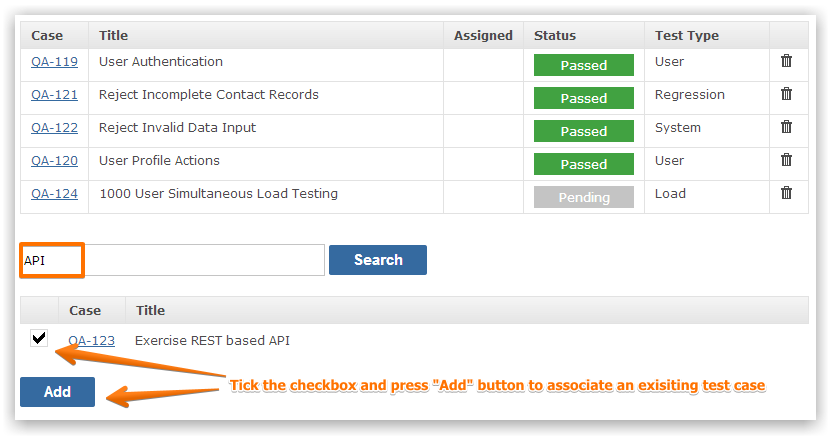
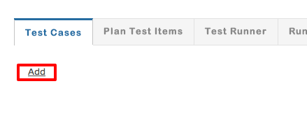
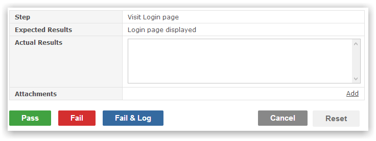
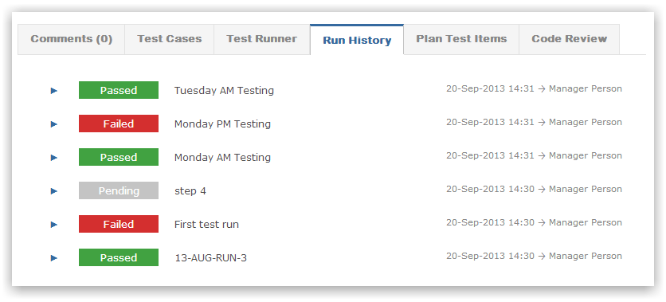
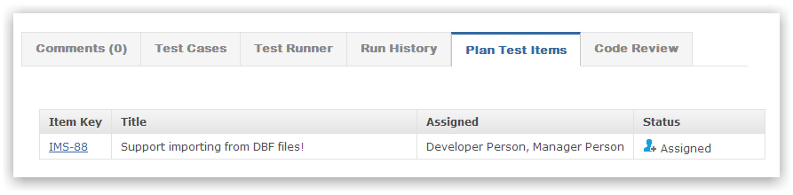

A test plan consists of the following sections.

A test plan must have at least one test case in order to execute the test run. You can create a new test case or re-use and associate existing test cases. Removing a test case from the test plan dis-associates it but does not delete it.

To associate an existing test case use the search box and start typing to find matching test cases.

You can also create a new test case and associate it with the test plan.

You can execute the test plan and pass or fail test cases.

Every test run is recorded and you can drill in to see run details.

Test cases can be associated with any other Gemini item (e.g. Change Request, Bug Fix). The test plan details all items related to it's test cases.
